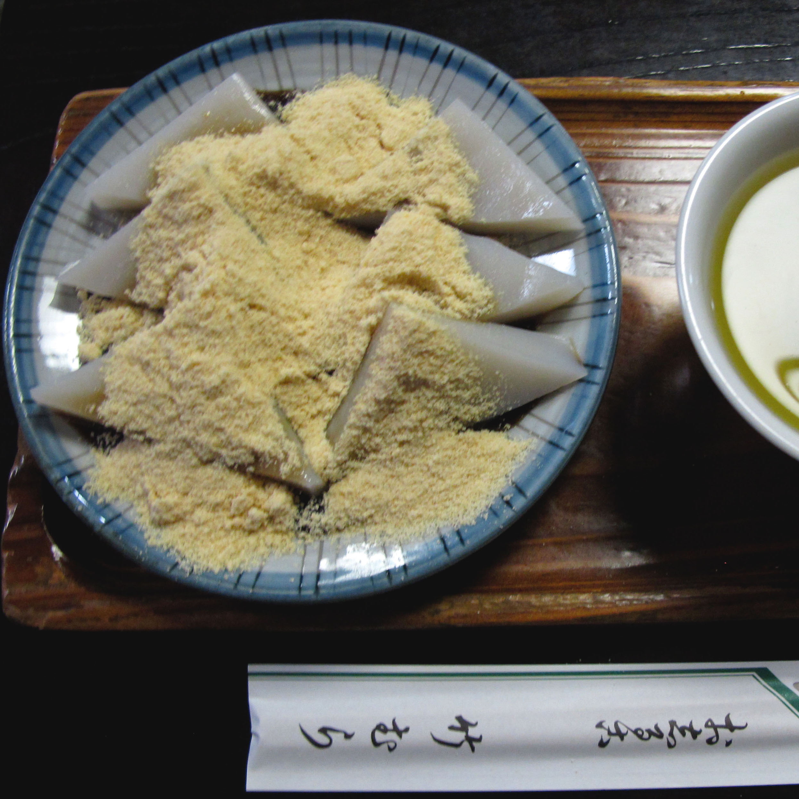
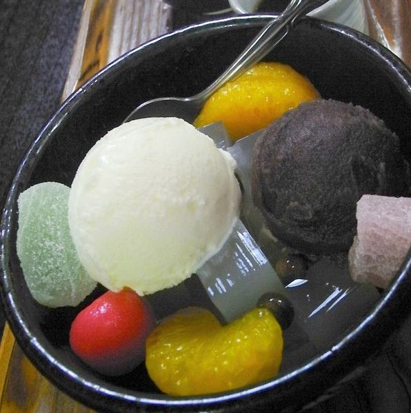

Takemura

Traditional Dessert Shop (best known for Mochi!)
The Dessert~
Sweetshops don’t get much more traditional than Takemura; inside and out it is a classic. Founded in 1930, this handsome two-story wooden building has stood untouched in the backstreets of Kanda-Sudacho, with its stone lantern, shrubs, the little palisade of bamboo and verge of greenery.
It’s not just the architecture that sets it apart. Yes, this is the way most of Tokyo used to look back in the day. However, it’s no musty museum piece. What makes it truly remarkable is that it operates at exactly the same rhythm as you’d have found 30, 50, 80 years ago — and with just the same menu.
Couldn't find a video of the actual Takemura but this is fun too
Okie these are actual pictures from Takemura

